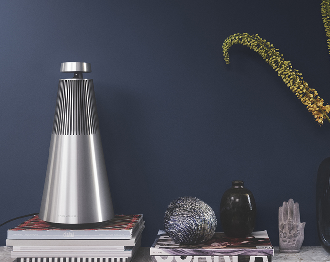

홈 > 브랜드 매거진 > 뱅앤올룹슨
뱅앤올룹슨
뱅앤올룹슨은 오디오를 가전제품이 아니라 공간 속 오브제로 다루는 브랜드다. 소리의 품질뿐 아니라 제품이 놓이는 방식, 재료, 형태, 조작 경험까지 디자인의 일부로 통합한다.
산업 분야 기술·전자 · 공개 등급 매거진 완성 · 브랜드 평가 5 ★


한눈에 보는 브랜드
뱅앤올룹슨은 오디오를 가전제품이 아니라 공간 속 오브제로 다루는 브랜드다. 소리의 품질뿐 아니라 제품이 놓이는 방식, 재료, 형태, 조작 경험까지 디자인의 일부로 통합한다.
브랜드 관점
뱅앤올룹슨은 오디오를 가전제품이 아니라 공간 속 오브제로 다루는 브랜드다. 소리의 품질뿐 아니라 제품이 놓이는 방식, 재료, 형태, 조작 경험까지 디자인의 일부로 통합한다.
시작과 성장
뱅앤올룹슨은 덴마크 오디오 전문 브랜드로, 1925년 라디오에 관심이 많았던 엔지니어 피터 뱅과 스벤드 올룹슨이 설립했다. 최초로 배터리 없이 플러그만으로 소리를 낼 수 있는 엘리미네이터를 발명했으며, 이후 오디오와 영상 영역으로 사업을 확장해나갔다.
혁신적인 제품들을 출시하며 성장해온 뱅앤올룹슨은 오늘날 프리미엄 홈 엔터테인먼트 브랜드로 자리 잡았다.
브랜드 아이덴티티
창립자인 피터 뱅과 스벤드 올룹슨의 성을 합쳐서 만든 뱅앤올룹슨은 단순한 전자 기기가 아닌 '삶의 동반자'를 지향하는 고객 중심의 브랜드 철학을 지니고 있다. 이를 바탕으로 내구성이 우수한 제품을 개발하고 있으며, 디자이너의 자율성을 중시하는 경영 철학을 바탕으로 독창적인 제품들을 선보이고 있다.
제품과 서비스
sound engineering, video technology
현재 상태
타임라인
BI/CI 변천사
함께 읽을 브랜드
 기술·전자 · 편집 검수미니
기술·전자 · 편집 검수미니미니는 작은 크기를 약점이 아니라 개성과 태도의 언어로 바꾼 자동차 브랜드다. 미니의 디자인은 실용성만을 말하지 않는다. 작음, 경쾌함, 도시적 감각을 결합해 차체...
 기술·전자 · 편집 검수Spotify
기술·전자 · 편집 검수Spotify스포티파이는 2006년 스웨덴 스톡홀름에서 설립된 세계 최대 규모의 음악 스트리밍 서비스다. 무료 광고 기반 티어와 유료 프리미엄 구독을 결합한 프리미엄(freemi...
Ai
Air up
기술·전자 · 편집 검수Air up에어업(air up)은 독일 뮌헨에 본사를 둔 음료 스타트업으로, 향(스멜)만으로 맛을 입히는 리필형 물병 시스템을 만든다. 물에는 설탕·첨가물·향료를 전혀 넣지 않...
Mu
Mux
기술·전자 · 편집 검수MuxMux는 2023년에 기록된 Technology 계열의 브랜드 아이덴티티 사례입니다. For The People가 아이덴티티 작업의 디자이너로 기록되어 있습니다. 공...
애플에게 혁신은 일회성 전략이 아니라 조직의 습관처럼 반복되는 브랜드 행동이다. 애플은 새로움을 캠페인으로만 말하지 않는다. 제품, 인터페이스, 매장, 발표 방식까지...
인텔은 보이지 않는 부품을 소비자가 인식하는 브랜드로 만든 대표적 사례다. 컴퓨터 내부의 기술을 밖으로 끌어내어 신뢰와 성능의 이름으로 각인시킨 점이 인텔 브랜딩의...
필립스는 기술을 과시하기보다 생활을 더 단순하고 건강하게 만드는 방향으로 브랜드 의미를 확장해 왔다. 전기·전자 기술은 기반이지만, 소비자가 인식하는 가치는 일상의...
 기술·전자 · 편집 검수Analog
기술·전자 · 편집 검수Analog애널로그(Analog)는 엣지 AI(Edge-AI)를 기반으로 인간의 잠재력을 확장하는 데 초점을 맞춘 기술·전자 분야 기업으로, 스페인 바르셀로나 기반 디자인 스튜...